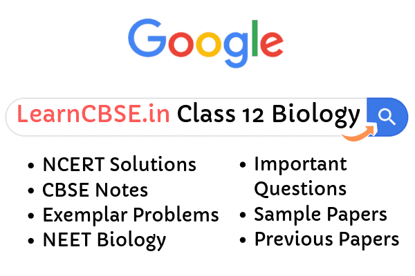

NCERT Solutions for Class 12 Biology : Biology may seem to be easy but sometimes it might get tough. The national council of education and training (NCERT) has set a curriculum for schools which follow the central board of secondary education (CBSE). NCERT solutions have been provided below to aid the students with answering the questions correctly, using a logical approach and methodology. The solutions provide ample material to enable students to form a good base with the fundamentals of the subject.
NCERT textbooks are prescribed by CBSE as the best books for preparation of the school as well as board examinations. The textbooks are deemed as more than enough, without any aid from other refreshers. The solutions are designed keeping in mind the language and the simplicity of the explanations that are given in the NCERT textbooks. Not just the board and school examinations, NCERT textbooks are known to play a very important role in JEE and NEET.
NCERT Solutions for Class 12 Biology
Several important concepts like Reproduction, Inheritance, Evolution, Food Production, Biotechnology, Ecosystem, biodiversity, etc are explained precisely in the NCERT class 12 biology textbook with good diagrams for better understanding of teachers as well as students so that their basics are clear from the very beginning and thus helps them in scoring good marks in boards exam.
NCERT Solutions for Class 12 Biology
- Chapter 1 Reproduction in Organisms
- Chapter 2 Sexual Reproduction in Flowering Plants
- Chapter 3 Human Reproduction
- Chapter 4 Reproductive Health
- Chapter 5 Principles of Inheritance and Variation
- Chapter 6 Molecular Basis of Inheritance
- Chapter 7 Evolution
- Chapter 8 Human Health and Disease
- Chapter 9 Strategies for Enhancement in Food Production
- Chapter 10 Microbes in Human Welfare
- Chapter 11 Biotechnology:Principles And Processes
- Chapter 12 Biotechnology and its Applications
- Chapter 13 Organisms and Populations
- Chapter 14 Ecosystem
- Chapter 15 Biodiversity and Conservation
- Chapter 16 Environmental Issues

Class 12 Biology Important Questions
NCERT Solutions
Class 12 Biology NCERT solutions will help in the following manner:
- Authentic Homework Guide
- The base for the preparation of competitive exams like JEE and NEET
- Strengthening basic concepts of subjects
- Error-free solutions
- Extra problems to build upon the basic concepts
Class 12 Biology Chapter 1 Reproduction in Organisms
In this chapter, we will learn about types, modes and the process of reproduction in different organisms.The subtopics covered in this chapter include asexual reproduction, sexual reproduction, pre-fertilization events, fertilization, and post-fertilization events. Well illustrated diagrams are also present which makes the learning easy for the students and helps them understand the topic thoroughly.
Class 12 Biology Chapter 2 Sexual Reproduction in Flowering Plants
This chapter is a combination of four chapters and holds a weightage of fourteen marks in 12 board examination.In this chapter, we will learn about the structure, morphology, and process of sexual reproduction in flowering plants. Also, the subtopics covered in this chapter include pre-fertilization events, double fertilization, post fertilization events and the knowledge about apomixis and polyembryony.
Class 12 Biology Chapter 3 Human Reproduction
In this chapter, we will learn about the human male and female reproductive system. Diagrams, illustrations, flowcharts, and easy language makes this chapter comprehensive and easy to learn. Moreover, the sequential progress of the topics helps us retain and grasp better.
The sub topics covered in this chapter are-
- Reproductive structures,
- Male reproductive systems,
- Female reproductive systems,
- The role of sex hormones,
- Gametogenesis,
- Spermatogenesis and more introductory topics of human reproduction.
Class 12 Biology Chapter 4 Reproductive Health
This chapter focusses on the issues of the significance of reproductive health and the methods to achieve it.This chapter also focusses on maternal health and the health of the child during pre-pregnancy, pregnancy and post-pregnancy periods.Infant mortality maternal mortality and amniocentesis are other topics covered here.
The subtopics covered in this chapter are:
- Reproductive Health – Problems and Strategies
- Population Explosion and Birth Control
- Medical Termination of Pregnancy
- Sexually Transmitted Diseases
- Infertility.
Class 12 Biology Chapter 5 Principles of Inheritance and Variation
It basically revolves around Genetics and Evolution.Similarity and variation between the parents and offsprings are discussed in this chapter.Mendel”s law of inheritance, the inheritance of one gene, the inheritance of two genes, sex determination, mutations, and genetic disorders are main topics discussed here.
Diagrams, illustrations, flowcharts, and easy language makes this chapter comprehensive and easy to learn. Moreover, the sequential progress of the topics helps us retain and grasp better.
Class 12 Biology Chapter 6 Molecular Basis of Inheritance
In this chapter, very simplified diagrams are given to understand all the structures of DNA,RNA, the process of replication, etc.
The topics covered in this chapter are:
- The DNA: Structure of polynucleotide chain, Packaging of DNA helix.
- The search for genetic material: The genetic material is DNA, Properties of genetic material.
- RNA world.
- Replication: The experimental proof, the machinery, and enzymes.
- Transcription: The transcription unit, Transcription unit and the gene, Types of RNA and the process of transcription.
- Genetic code: Mutations and genetic code, t RNA. Translation. Regulation of gene expression.
- The Lac Operon.
- Human genome project: Salient
Class 12 Biology Chapter 7 Evolution
Evolution biology is the study of history of life forms on earth.This chapter deals with the origin of life and the evolution of life forms or biodiversity on planet earth in the context of evolution of earth and against the background of evolution of universe itself. Diagrams, illustrations, flowcharts, and easy language makes this chapter comprehensive and easy to learn. Moreover, the sequential progress of the topics helps us retain and grasp better.
Class 12 Biology Chapter 8 Health and Diseases
Health, maintenance of optimum health, diseases, types, treatment and prevention, immunity, and its types and address to some diseases such as AIDS, cancer, and adolescent issues constitute this chapter.
Subtopics covered in this chapter are:
- Common Diseases in Humans
- Immunity
- AIDS
- Cancer
- Drugs and Alcohol Abuse.
Class 12 Biology Chapter 9 Strategies for Enhancement in Food Production
This chapter deals with biological principles applied to animal husbandry and plant breeding that have a major role in to increase food production. Several new techniques like embryo transfer technology and tissue culture techniques that play a pivotal role in further enhancing food production are discussed in this chapter.
Class 12 Biology Chapter 10 Microbes in Human Welfare
Microbes are also referred to as micro-organisms or microscopic organisms as they can only be seen under a microscope. They are tiny living creatures, invisible to the naked eye and are present all around us, in air, water, soil and so on. They played a key role in the evolution of the planet earth. Few microbes cause severe infections and disease that even result in death and others are the beneficial ones and harmless to our lives. Disease-causing microbes are called as pathogens. Influenza, tuberculosis, polio, cholera, HIV are some of the best examples of disease caused by these microbes. The most common microbes include Bacteria, protozoa viroid, some algae, Fungi, and Viruses.
Class 12 Biology Chapter 11 Biotechnology Principles and Processes
The european federation of biotechnology has defined biotechnology as” the integration of natural science and organisms, cells, parts thereof, and molecular analogs for products and services”.This chapter, deals in depth study of principles and processes involved in biotechnology.
Among many techniques, modern biotechnology is the result of the following two core techniques. They are-
- Genetic engineering
- Manufacturing of Antibiotics, Drugs and other Vaccines
Class 12 Biology Chapter 12 Biotechnology and its Application
In this chapter, students will learn that how human beings have used biotechnology to improve the quality of human life, especially in the field of food production and health. Biotechnology has given humans several useful products by using microbes, plants, animals, and their metabolic machinery.
Class 12 Biology Chapter 13 Organisms and Populations
In this chapter, students shall explore ecology at organismic and population level. This chapter deals with topics such as organisms and its environment, niche, major abiotic factors affecting the organisms and its environment such as temperature, water, light, soil, responses to abiotic factors such as regulation , conformation, migration and suspension.
Diagrams, illustrations, flowcharts, and easy language makes this chapter comprehensive and easy to learn. Moreover, the sequential progress of the topics helps us retain and grasp better.
Class 12 Biology Chapter 14 Ecosystem
An ecosystem can be visualized as a functional unit of nature, where living organisms interact among themselves and also with the surrounding physical environment.In this chapter student will first learn about structure of ecosystem,in order to appreciate the input (productivity), transfer of energy (food chain) and the output.
Class 12 Biology Chapter 15 Biodiversity and its Conservation
In this chapter students will learn about importance and significance of biodiversity, its types, patterns, evolution, degradation, and conservation.
Genetic diversity, species diversity, latitudinal gradients, species area relationship, causes of biodiversity losses, in-situ conservation and ex-situ conservation are few topics covered in this chapter.
Class 12 Biology Chapter 16 Environmental Issues
This chapter deals with the problems that are posing a threat to the ecological balance in nature such as pollution, global warming, deforestation, etc. and measures taken to control such kind of pollution. This chapter also covers the effects of pollution on the human life and how it is affecting the peoples day to day life.
The solutions are guaranteed to be error-free and easily comprehensible. The students are advised to refer to these authentic solutions against the multiple refresher books. The NCERT textbooks are prescribed by CBSE, and hence form the most authentic source of knowledge in the school syllabus.